Create a profile
Before creating a profile…
Open an analysis video
Open the video window by clicking on Window ▶Videos. In the video window, you can open and import the video you want to analyze
import

ウィンドウがポップアップされるので
解析したい動画をクリックし開く

Note
You can import multiple videos at the same time by Shift+click
The video you want to analyze will be displayed in the video window. 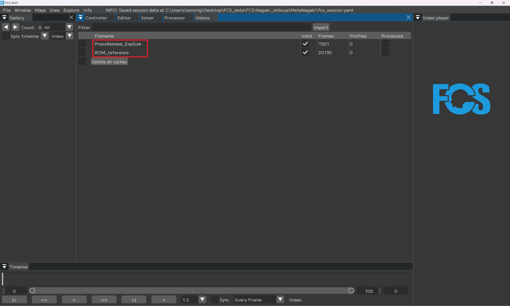
Timeline
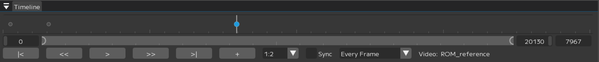
Timeline: move the bar from side to side and manually play the video
[0][20130]：You can adjust the frame size of the video
[7967]： current frame count
|< >|：1フレーム前/後に移動する
<< >>：Jump to the registered profile
＞ ||：Play/stop video (pause button appears while playing)
1:2▼：Change the resolution of the displayed video (the smaller the scale, the clearer the preview; the larger the Scale, the rougher the preview)
Sync：- [x] でTimeline操作状況をMayaのTimeSliderと一致させる
EveryFrame/Realtime: change the playback speed
Video: video name displayed in the video player
Editor
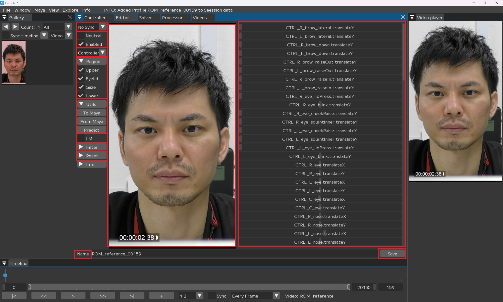 No Sync▼
To Maya：登録されているprofile情報をMayaに転送する
From Maya at save：saveする際にMaya上での調整データを取得しFCSに反映する
Both: Enable features from both and to.
No Sync: Do not sync FCS and Maya.
Note
This page describes how to add and edit profiles. You can chose either Maya or FCS as a base for adjusting facial expressions, but we recommend using Both for the first time.
Neutral：- [x] デフォルトの表情として必ず1つ登録する
Enabled：- [x] 解析する素材として使用する
Controller▼
Controller: controller display becomes name
Value: controller display becomes a number
▼Region
Upper/Eyelid/Gaze/Lower：- [x] 調整した情報を登録する
▼Utils
To Maya: send adjusted values on FCS to Maya
From Maya: send the adjusted values in Maya to FCS
Predict: function to analyze facial expressions from images and map them to 3D models in Maya
LM: display LandMark
▼Filter
▼all/Upper/Eyelid/Gaze/Lower: display controllers by selecting items
[ ]: display controllers by entering characters
▼Reset: delete the entered information
Name: name to register the profile
Save: save the changed information
Image segment: image added by clicking + from Timeline is displayed
Controller: controllers registered in Controller Info are displayed
Gallery
 Window to display created profile
Window to display created profile
◀▶：1列に表示するprofileの数を変更する。◀を押すと少なく、▶を押すと多くなる。最小3、最大10。 Count:○○：登録しているprofileの総数
All▼：該当する項目を絞り込む
All：すべてのprofileを表示する
Enabled：解析に使用するprofileを表示する。Enabledに- [x] を入れて登録したprofileが対象となる。
Disabled：解析に使用しないprofileを表示する。Enabledに- [x] を入れず登録したprofileが対象となる。
Default：数値がdefaultのprofileを表示する。
Not Default：数値がdefaultではないprofileを表示する。
Neutral：Neutralにチェックを入れて登録したprofileを表示する。
（Region）Enabled：該当する（Region）に- [x] を入れて登録したprofileを表示する。
（Region）Disabled：該当する（Region）に- [x] を入れず登録したprofileを表示する。
Sync timeline- [x] ：登録したprofileと同じ動画を開いた状態でprofileを選択すると、該当するフレームにジャンプする。 ▼▲：ソートの昇順 降順を変更する
Video▼：ソート機能
Video：profileのName順にソート
Created At：profileを作成した日時で順にソート
Saved At：saveした日時で順にソート
（controller名）：該当する（controller）に登録した数値でソート
ピックアップした画像
緑：「Neutral」に- [x] を入れて登録したProfile
赤：数値がデフォルト状態/未編集のProfile
青：選択中（編集中）のprofile
黒：「Enabled」の- [x] を外し、「Disabled」で登録したprofile
白：リターゲット後、登録したprofile
Create a profile
様々な表示のProfileを追加することで解析の精度が上がっていきます。
単純に数が多ければ良いわけではなく、似た表情のProfileに対し、コントローラーの数字が違ってしまった場合、ノイズになってしまうため注意が必要です。
また、解析する動画毎にProfileを1つ以上作成する必要があります。
Note
We recommend creating about 50 profiles with ROM (Range of Motion). For the expression of ROM, please refer to the starter kit.
Note
profileには基本的に全てのRegionの登録を推奨していますが 一部例外があります。 「Profileを作成するときの注意点 目を閉じる/薄目の時のGaze登録について」をご参照ください
Load the video you want to analyze:
開いた動画ファイル名の上で右クリック
Open
Video is displayed in Video Player
Adding Profile:
VideoTimelineウィンドウの
スライダーを動かし表情の登録を行いたいフレームで止め
+を押す
Galleryに指定したフレームの画像が追加される

Note
Profiles with a value of 0 (unregistered) are displayed in red.
Registering Neutral facial expressions
Neutral表情とは、アクターの表情筋に力が入っていないナチュラルな表情のことです。
セッション内で必ず一つNeutral表情を設定してください。
Neutralに- [x]
任意の名前に変更
Save 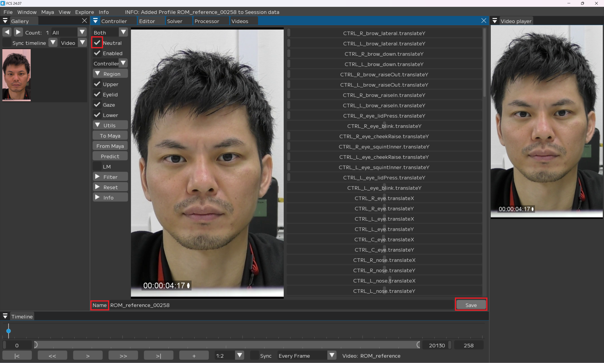
Note
Neutral’s profile will turn green when registration is completed.
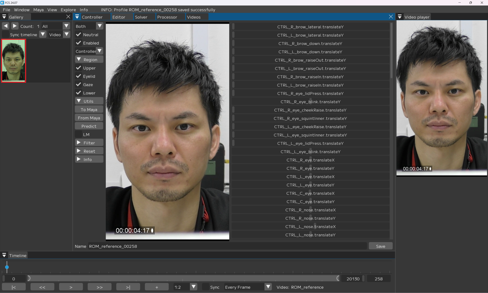
Adjust facial expressions in Maya
VideoTimelineウィンドウのスライダーを動かし表情の登録を行いたいフレームで止め+を押す
Galleryに指定したフレームの画像が追加されます。

Note
Profiles with a value of 0 (unregistered) are displayed in red.
追加した赤色の画像をクリックし、Editor画面に表示されている画像が同じであることを確認

Mayaのコントローラーリグで、追加したアクターの表情と同じになるようにキャラクターの表情を調節
From Mayaをクリック 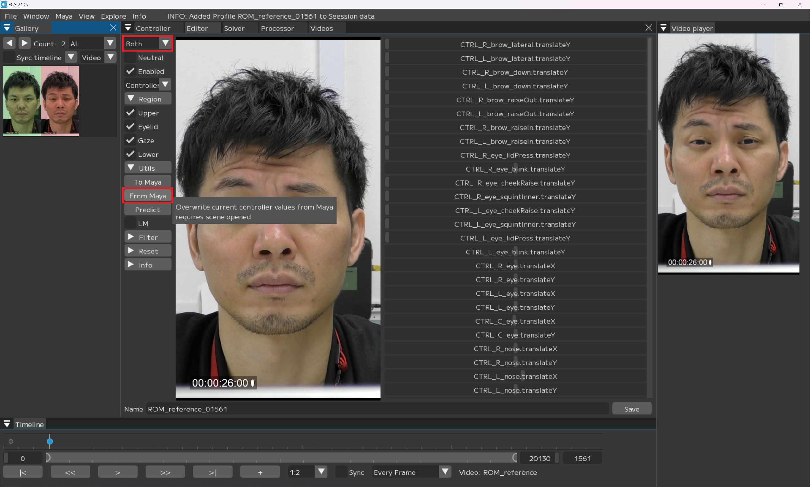 Mayaでの調整情報がFCSに反映されます。
Note
If you select “From Maya at save” or “Both” in the Sync pull-down menu, the adjusted values are automatically synchronized.
Note
If you forget to register a controller, the expressions may appear different from the look you created when you reopen the window. In this case, please re-register the controller and re-register the profile.
Nameを任意の名前に変更
Save

Note
Changing file name is not mandatory.
When you customize facial expressions in FCS
VideoTimelineウィンドウのスライダーを動かし表情の登録を行いたいフレームで止め+を押す
Galleryに指定したフレームの画像が追加されます。
Note
Profiles with a value of 0 (unregistered) are displayed in red.
追加した赤色の画像をクリックし、Editor画面に表示されている画像が同じであることを確認
Warning
When Sync function is set to “No Sync”, the profile information is not automatically shared, so the previously registered expression is displayed in Maya.
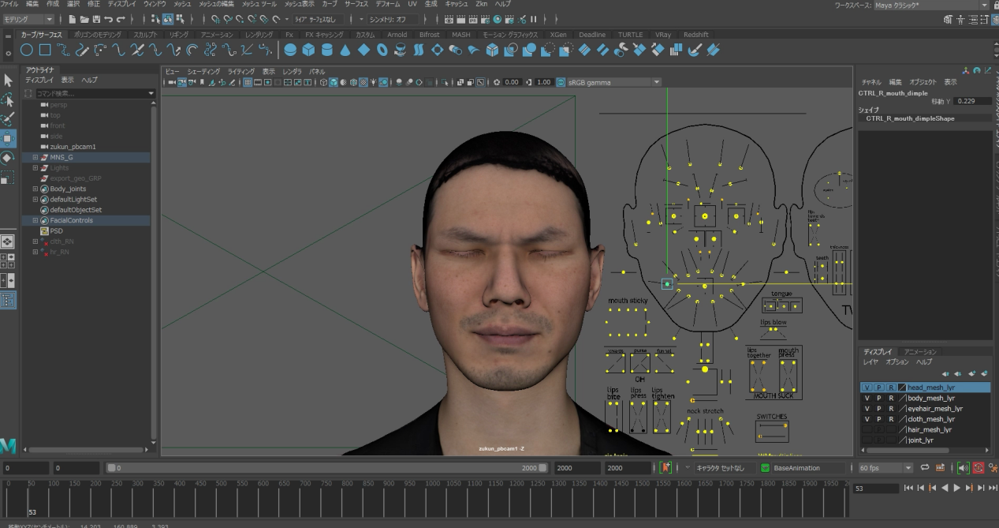
Note
If you reopen the window with Sync function set to “Both”, it will show the default look. Skip this process if it’s already set.
Mayaのコントローラーリグで、追加したアクターの表情が同じになるようにキャラクターの表情を調節
To Mayaをクリック
Note
When “To Maya” or “Both” is selected in the Sync pull-down menu, the adjusted values are automatically synchronized.
Adjustments made in FCS are reflected in Maya.
Note
絞り込みたい項目（文字含む）のみ表示されるようにするには…
▼Filterから搾りたい項目をクリック
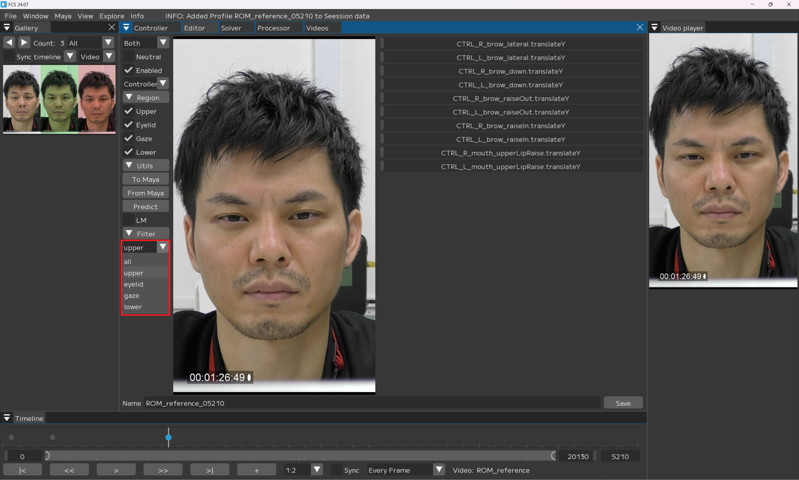
When creating a profile with Predict
This software automatically retargets from the created profile. Predict function After registering a certain number of profiles, you can use the Predict function to register additional profiles. The software will create a predicted expression based on the registered profile.
Warning
The accuracy of automatic retargeting by Predict is linked to the accuracy of the registered profile.
Also note that it does not analyze the entire video.
VideoTimelineウィンドウのスライダーを動かし表情の登録を行いたいフレームで止め+を押す
Galleryに指定したフレームの画像が追加される
Note
Profiles with a value of 0 (unregistered) are displayed in red.
追加した赤色の画像をクリックし、Editor画面に表示されている画像が同じであることを確認
Predict実行
valueの数値が変動します。
Predict results will be displayed in Maya. If necessary, make adjustments, and when the contents are ready to be registered! images/P022.png
{kind=link}
Save

Notes on creating a profile
目を閉じる/薄目の時のGaze登録について
Warning
目を閉じる、薄目のプロファイルで黒目が見えないものは登録する際にGazeの- [x] を外してください
解析結果の精度が低下してしまう可能性があります
Example: if you want to create a squeezing movement of the eyebrows. 
表情を調整した上で 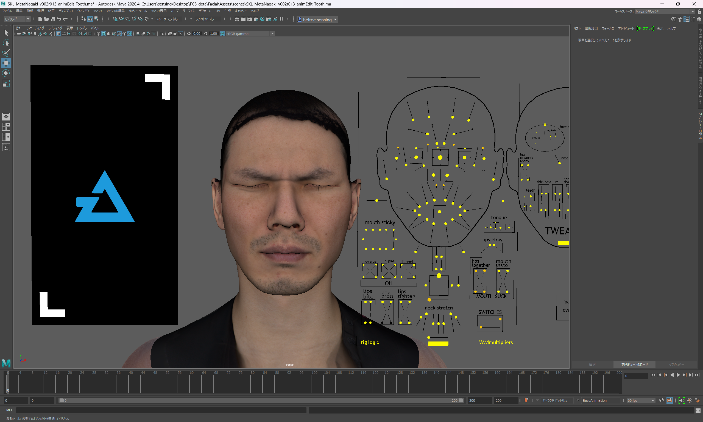
Regionのgaze/lowerの- [x] を外す

Save
解析結果が好ましくない場合
Warning
解析する動画は、必ず1動画1profile以上作成するようにしてください Profileを作成していない場合、精度が十分ではない解析結果が出力される可能性があります
Videosウィンドウの「Profiles」をご参照ください
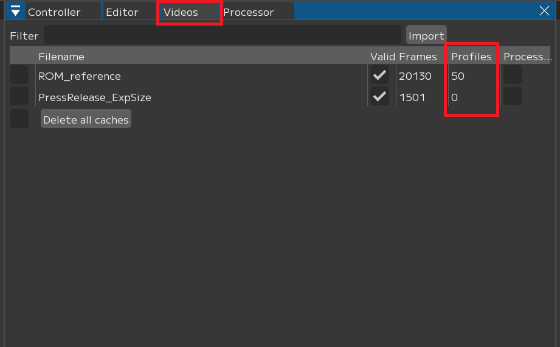
「Profiles」が表示されない場合
メニューバー上部で右クリック
「Profiles」に- [x] を入れる
Troubleshooting
＋If a Profile is not added to Gallery after pressing the + key
＋If a Profile is not added to Gallery after pressing the + key The Gallery display window may be too small.
In that case, click on ◀▶ in the Gallery window to display the Profile you have added. 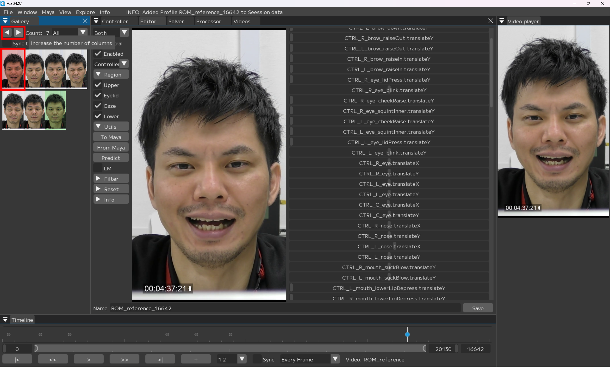
Note
FCS does not add duplicate profiles for the same frame. If a duplicate is added, the Log window will display “WARNING: Frame XXX already has a Profile associated with it.” in the Log window.
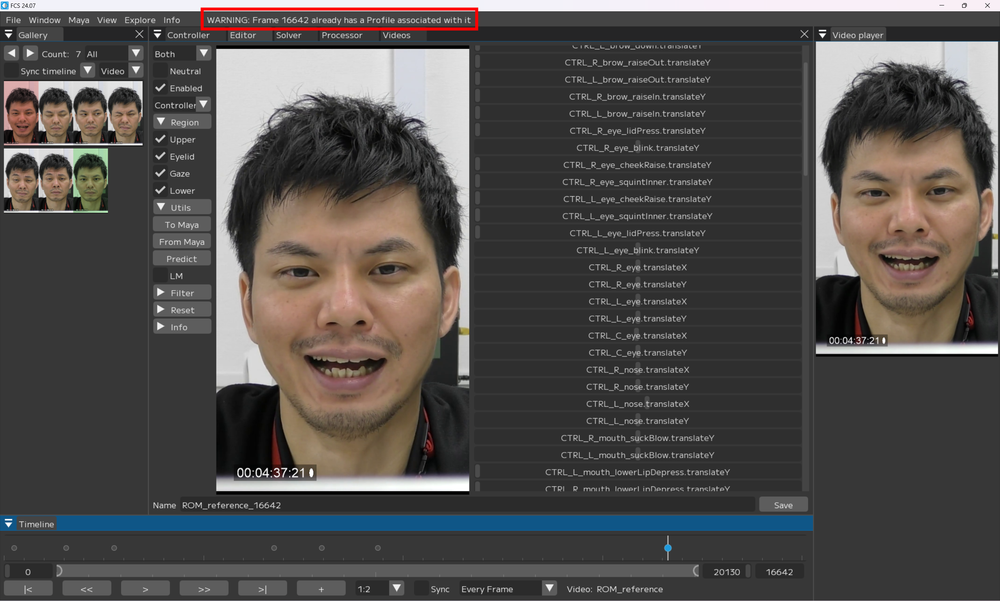